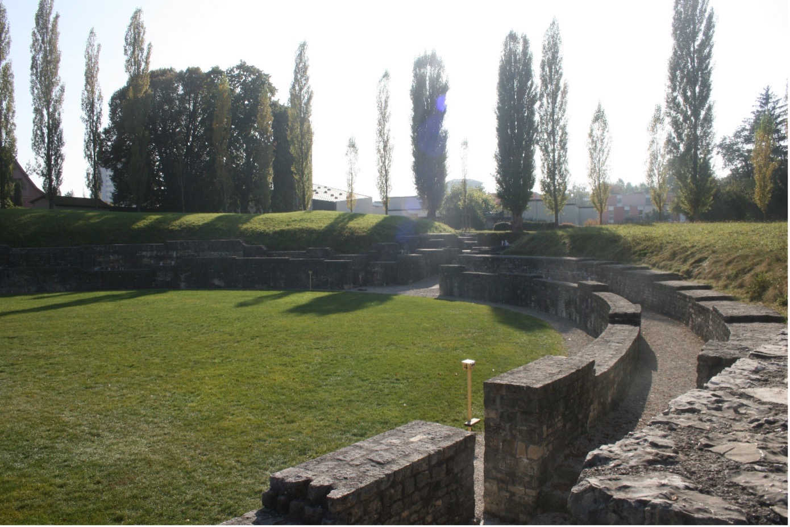

Überreste eines Amphitheaters finden sich in fast jeder ehemaligen römischen Stadt. Viele davon sind grösser, älter und besser erhalten oder zumindest besser vermarktet als dasjenige in Vindonissa (heute: Brugg-Windisch). Wieso sollten wir gerade auf dieses einen Blick werfen? Und worin liegt der theologische Aspekt dieses Monumentalbaus?
Abbildung 1: Blick auf das Amphitheater Vindonissa vom nordwestlichen Eingang in Richtung des südwestlichen Eingangs. (Bild: Tabea Stauffer)
Erscheinungsbild & Funktion
Viele Menschen denken erst einmal an blutige Tier- und
Gladiatorenkämpfe. Diese Wahrnehmung von Amphitheatern ist jedoch stark
durch Klassiker wie die «Asterix & Obelix»-Comics oder Filme wie «Ben
Hur» sowie «Der Gladiator» geprägt. Die dort dargestellten, blutigen
Szenarien mag es zwar gegeben haben, jedoch standen sie nicht an der
Tagesordnung. Für Vindonissa ist der Import nicht einheimischer Tiere
insbesondere durch den Fund eines Fussknochens eines Kamels (vergleiche
Abbildung 2) belegt. Tierhetzen mit hiesigen Tieren wie Bären oder
Wildschweinen gelten aber als verbreiteter.
In Vindonissa erfolgte
die Errichtung des Legionslagers ca. 16/17 n. Chr. und wurde 30 n. Chr.
vergrössert. In dieser Anfangsphase bestanden die Bauten aus Holz,
welche 47 n. Chr. durch Bauten aus Stein und Ziegeln ersetzt wurden.
Davon profitierte auch das abgebrannte Holz-Amphitheater, welches beim
steinernen Neubau ca. 25 % an Fläche gewann und somit Platz für rund
11'000 Zuschauer:innen bot. Dieses wurde dann bis zum endgültigen Abzug
der Truppen 101 n. Chr. von der Legion und der Bevölkerung genutzt.
Über die Zeit wurde die Lokalität des römischen Amphitheaters
vielleicht nie ganz vergessen, wie der an den einstigen Standort der
Bärenzwingergrube angelehnte Flurname «Bärlisgruob» vermuten lässt.
Dennoch hatte es über lange Zeit keine Bedeutung und verfiel. Die Wiese
wurde sogar bis kurz vor der Freilegung im Jahr 1897 als Ackerfeld
genutzt.
Heute ist das Amphitheater in Vindonissa trotz seiner
beachtlichen Grösse von der Hauptstrasse, die neben dem Bau vorbeiführt,
kaum zu sehen. Die Mauerreste verschwinden fast komplett in der Wiese.
Dennoch ist es das grösste Amphitheater der Schweiz. Der gesamte ovale
Bau misst ca. 112 m auf 100 m.
Abbildung 2: Fussknochen eines Kamels, gefunden im Amphitheater Vindonissa, ausgestellt beim nordwestlichen Eingang des Amphitheaters. (Bild: Tabea Stauffer)
Bedeutung
Das Amphitheater Vindonissa ist Zeugnis für die römische Besiedlung der
Schweiz. Vindonissa wurde aber noch nicht während der julianischen
Eroberungswelle im 1. Jahrhundert errichtet, die auch in «De Bello
Gallico» beschrieben ist. Dennoch übernahm Vindonissa schnell eine
wichtige Funktion in der Organisation des Römischen Reichs in der
Schweiz. Deshalb, und weil Vindonissa das grösste und älteste
Amphitheater auf Schweizer Boden ist, stellt es einen Schlüsselpunkt der
Provinz Helvetia zur Zeit der Römer dar, die seit über hundert Jahren
archäologisch intensiv erforscht
Primär wurde das Amphitheater errichtet, um der immigrierten Bevölkerung
Abwechslung zu bieten. Die Spektakel waren jedoch nicht nur
Volksbefriedigung, sondern auch politisches sowie religiöses Instrument.
So gab es nebst Trank- sowie Tieropfern und Reinigungsritualen auch
Gebete für das Wohlergehen des Kaisers und seiner Familie (≈
Kaiserkult).
Dass dieser Kult nicht in einem eigenen Tempel praktiziert wurde, ist
dabei nichts Exzeptionelles (vergleiche Nodutus-Kult). Dennoch ist es
bemerkenswert, dass der Kaiserkult sowohl an öffentlichen Plätzen wie in
Amphitheatern als auch im privaten Rahmen ausgeübt wurde. Insbesondere
fand dieser Kult unter Soldaten hohen Anklang und ist deshalb von
grosser Bedeutung für Vindonissa. Gleichwohl entsprach der divinisierte
Kaiser nicht einer etablierten Gottheit und die Menschen versprachen
sich wohl kaum Transzendenzerfahrungen von seiner Verehrung. Es handelt
sich dabei wohl eher um eine einigende Loyalitätsreligion, womit auch
ein gewisses Ethikverständnis mitschwingt. Insofern ist die Bezeichnung
«religiös» oder «theologisch» durchaus angemessen. Die Teilhabe am
Kaiserkult brachte aber sicherlich Integration sowie Anerkennung in der
Bevölkerung und war Bedingung für gewisse politische Ämter.
Auch heute weist das Amphitheater Vindonissa noch theologische Aspekte
und ist in vielen Dingen mit einer Kirche vergleichbar. So sind
Amphitheater für uns oftmals der Inbegriff römischer Architektur oder
das Römische Reich allgemein. Umgekehrt sind es Kirchen für das
Christentum ebenso. Ebenso sind etliche ältere Kirchen sowie das
Amphitheater öffentliche Anlagen, die jeder Gesellschaftsschicht
zugänglich sind. Zudem versammeln sich nur noch an ausgesuchten Tagen
grössere Menschenmengen. Dies geschieht einerseits zur jährlich
stattfindenden 1. August-Feier, die Brugg und Windisch dort gemeinsam
abhalten. Andererseits gibt es seit der Aufführung der «Braut von
Messina» im Jahre 1907 immer wieder kulturelle Veranstaltungen. Im
Vergleich dazu können heute ebenso diverse Kirchen wie das Grossmünster
in Zürich für säkulare Veranstaltungen gemietet werden.
So gleicht der Amphitheater-Kult vielen Landeskirchen. Es sind alte
Gebäude mit römisch inspirierter Architektur, die einst einen
Versammlungsort darstellten, aber kaum noch genutzt werden. Die darin
praktizierten Kulthandlungen waren Massenphänomene mit vereinender
Komponente. Wahrscheinlich werden sich die beiden Kulte, Bauten oder
Religionen auch in Zukunft ähneln, denn die Römer und das Christentum
weckten seit damals über alle Zeiten Interesse. Somit erhielten sie eine
(fast) zeitlose Bedeutung und werden diese wohl auch in Zukunft
innehaben.
Tabea Stauffer ist Theologiestudentin im Bachelorstudium an der Universität Bern.
Weitere Artikel von {{ author.author }} finden Sie hier:
Zur Vertiefung:
- Frei-Stolba, Regula/Hänggi, Jürg/Hänggi, Reneé/Matter, Georg/Trumm, Jürgen/Tschudin, Wal-ter/Zemp, Ivo: Das Amphitheater Vindonissa Brugg Windisch, Windisch 2011.
- Drack, Walter/Fellmann, Rudolf: Die Römer in der Schweiz, Stuttgart/Jona 1988.
- Liertz, Uta-Maria: Kult und Kaiser, Rom 1998.
- Rosenberger, Veit: Religion in der Antike, Darmstadt 2012.